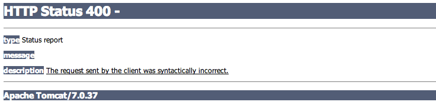

Spring MVC Forms
Spring MVC Forms
Nous avons vu comment attacher des méthodes à des paths et afficher des données.
Nous allons maintenant fournir une interface web pour éditer ces données.
L'encoding
Lorsque le navigateur envoie des données vers le serveur, l'encoding dépend de différents paramètres.
L'encoding par défaut est ISO-8859-1 (ISO Latin)
Nous aimerions que toutes nos requetes soit traitées en UTF-8.
Afin de forcer l'encoding lors de la lecture des paramètres, on utilise le filtre suivant dans le web.xml.
<!-- Spring UTF-8 filter -->
<filter>
<filter-name>encoding-filter</filter-name>
<filter-class>org.springframework.web.filter.CharacterEncodingFilter</filter-class>
<init-param>
<param-name>encoding</param-name>
<param-value>UTF-8</param-value>
</init-param>
<init-param>
<param-name>forceEncoding</param-name>
<param-value>true</param-value>
</init-param>
</filter>
<filter-mapping>
<filter-name>encoding-filter</filter-name>
<url-pattern>/*</url-pattern>
</filter-mapping>
Le code source du CharacterEncodingFilter de spring est très simple.
public class CharacterEncodingFilter extends OncePerRequestFilter {
private String encoding;
private boolean forceEncoding = false;
public void setEncoding(String encoding) {
this.encoding = encoding;
}
public void setForceEncoding(boolean forceEncoding) {
this.forceEncoding = forceEncoding;
}
@Override
protected void doFilterInternal(HttpServletRequest request, HttpServletResponse response, FilterChain filterChain)
throws ServletException, IOException {
if (this.encoding != null && (this.forceEncoding || request.getCharacterEncoding() == null)) {
request.setCharacterEncoding(this.encoding);
if (this.forceEncoding) {
response.setCharacterEncoding(this.encoding);
}
}
filterChain.doFilter(request, response);
}
}
Ainsi, nous n'aurons pas de problèmes avec les accents.
La gestion des tâches
Nous commençons par créer un nouveau Controller
@Controller
public class AdminController {
}
Celui ci va devoir supporter les opérations suivantes :
- Afficher un formulaire d'ajout d'une tâche
- La sauvegarde d'une nouvelle tâche
- Afficher un formulaire pour l'édition d'une tâche
- La sauvegarde de la tâche
- La suppression d'une tâche
Une nouvelle tâche
On ajoute une méthode au Controller pour la création d'une nouvelle tâche.
@RequestMapping("/add")
public String add(Model model) {
// on injecte une Task vierge dans le modèle
model.addAttribute("task", new Task());
return "edit";
}
La vue est un formulaire qui permet d'éditer les attributs du billet.
Elle utilise la css de bootstrap afin d'afficher un formulaire aéré et lisible.
Il faut porter ce formulaire faire une jsp (edit.jsp) vers laquelle pointe le controller.
Le + dans le header affiche donc maintenant un formulaire vide.
Le post
Si on regarde le tag form de la page, on voit que celui-ci pointe vers /edit en méthode "post"
La méthode de ce formulaire indique que les données seront envoyés avec la méthode HTTP POST.
C'est classique pour un formulaire qui met à jour des données sur un serveur.
- C'est sémantiquement correct
- Cela permet de transférer des données qui ne passeraient pas en GET (fichiers, beaucoup de texte...)
- Cela informe le navigateur que ce n'est pas une action sans conséquences.
Le mapping coté serveur est donc le suivant
@RequestMapping(value = "/edit", method = RequestMethod.POST)
public String post(Task task) {
taskService.save(task);
return "redirect:/";
}
On note plusieurs choses
- L'ajout de method = RequestMethod.POST dans l'annotation
- L'attribut task de la méthode qui est remplit automatiquement (binding) par spring
- La sauvergarde de la task
- Le redirect (vers la home) après un post
Si on utilise le formulaire en l'état, sans fournir de date, on obtient une réponse 400 :
Spring ne parvient pas a convertir une String vide en Date et il ne sait pas quoi faire.
Le binding
L'opération qui consiste a convertir des String et a injecter les valeurs dans notre Objet est appelée binding.
Lors de celle-ci, il peut se produire des erreurs.
La première chose à faire est de prendre la main lorsqu'une erreur survient.
@RequestMapping(value = "/edit", method = RequestMethod.POST)
public String post(@ModelAttribute Task task, BindingResult result) {
if (result.hasErrors()) {
return "edit";
}
taskService.save(task);
return "redirect:/";
}
Notre attribut task a maintenant une annotation @ModelAttribute qui ajoute task dans le model.
BindingResult contient le résultat du binding pour l'objet qui le précéde dans la liste des paramètres de la méthode.
On ajoute la taglib de spring pour les formulaires dans la jsp.
<%@ taglib prefix="form" uri="http://www.springframework.org/tags/form" %>
Le formulaire doit maintenant être un tag spring
<form:form cssClass="form-horizontal" commandName="task" action="/edit" method="post">
...
<form:form>
Et finalement l'affichage de l'erreur
<c:set var="error"><form:errors path="date" cssStyle="color:#B94A48" cssClass="help-block"/></c:set>
<div class="form-group ${not empty error ? 'has-error' : ''}">
<label for="date" class="col-lg-2 control-label">Date</label>
<div class="col-lg-4">
<input type="text" class="form-control" name="date" id="date" placeholder="dd/MM/yyyy">
${error}
</div>
</div>
Nous avons utilisé le code de la doc bootstrap pour afficher ces erreurs mais il existe de multiples façons de faire.
Cela étant fait pour la date, prévoir dès maintenant la même chose pour tous les champs.
Un meilleur message d'erreur
Pour le moment, le message d'erreur est un peu riche tout en étant peu compréhensible.
Failed to convert property value of type java.lang.String to required type java.util.Date for property date; nested exception is org.springframework.core.convert.ConversionFailedException: Unable to convert value "" from type java.lang.String to type java.util.Date; nested exception is java.lang.IllegalArgumentException
Il serait possible de configurer un meilleur message dans un fichier de localisation mais pour notre besoin, nous pouvons faire simplement.
<form:errors path="date"><span style="color:#B94A48" class="help-block">La date n'est pas correcte</span></form:errors>
C'est plus court et plus clair.
Un binding qui marche
Spring n'a pas de soucis pour binder un String dans un String mais peine pour la Date.
En effet, spring ne peut deviner quel est le format de notre date.
Il nous revient donc de configurer le binder dans le controller.
@InitBinder
public void initBinder(DataBinder binder) {
SimpleDateFormat dateFormatter = new SimpleDateFormat("dd/MM/yyyy");
binder.registerCustomEditor(Date.class, new CustomDateEditor(dateFormatter, true));
}
Le booléen true indique que le binder va accepter une date vide (lenient).
Avec cela, on peut sauver des tâches avec ou sans date.
L'édition
Pour commencer, on rajoute le lien sur le titre des tâches dans task.tag
<span class="lead"><a href="/edit/${task.id}">${fn:escapeXml(task.title)}</a></span>
Le pattern est /edit/{id} que l'on rajoute dans le controller
@RequestMapping("/edit/{id}")
public String edit(@PathVariable Long id, Model model) {
model.addAttribute("task", taskService.findById(id));
return "edit";
}
On va donc chercher la tâche dans la base et on la donne à la vue.
Faire en sorte que cela fonctionne.
Dans le formulaire, on rajoute un champs caché qui contient l'id de l'entité éditée
<form:hidden path="id" />
Il reste encore à afficher la valeur des attributs dans notre tâche.
Le plus simple est encore d'utiliser les tags spring, par exemple :
<input type="text" class="form-control" name="title" id="title" placeholder="Titre"><form:input cssClass="form-control" path="title" id="title" placeholder="Titre" />
Faire de même pour tous les champs et constater que les données sont bien affichées à l'édition.
Enfin, afin que le bouton ait le bon message en fonction de la situation, on le change légèrement
<button type="submit" class="btn btn-primary">Add</button><button type="submit" class="btn btn-primary">${empty task.id ? 'Add' : 'Update'}</button>
save or update ?
Si on sauve une tâche existante, elle est dupliquée en base.
La raison est simple, l'implémentation de save de TaskServiceImpl est la suivante
@Override
@Transactional
public void save(Task task) {
Session session = sessionFactory.getCurrentSession();
session.save(task);
}
La méthode save de la session sauve une nouvelle entité à chaque fois.
La solution n'est pas loin mais on va s'assurer que l'on corrige bien le problème avec un test unitaire.
@Test
public void udpate() {
Task task = task();
taskService.save(task);
taskService.save(task);
Assert.assertEquals(1, taskService.count());
}
Il faut maintenant proposer un changement de la méthode save qui fasse passer ce test.
Avec ce code, l'édition de tâche est fonctionnelle.
Une aide à la saisie de la date
Pour la date, nous pouvons proposer une petite optimisation afin d'aider la saisie.
Spring fait du binding dans les 2 sens
- Lors du POST, les données du formulaire vers les attributs de l'objet
- Lors de l'affichage du formulaire, les attributs de l'objet vers la page web
En effet, pour /add, une tâche est injectée dans la vue via le controller
model.addAttribute("task", new Task());
Pour pré remplir le champs date avec la date courante (ou une autre), il suffit d'initialiser l'attribut :
@Column private Date date = new Date();
C'est une toute petite modification qui peut faire gagner beaucoup de temps aux utilisateurs.
La validation
Pour le moment, tout les champs peuvent être vide.
La seule contrainte existant concerne le format de la date.
Cependant, une tâche sans titre et sans date est indésirable.
Il est possible (et simple) de faire cette validation à la main.
@RequestMapping(value = "/edit", method = RequestMethod.POST)
public String post(@ModelAttribute Task task, BindingResult result) {
if (task.getTitle() == null || task.getTitle().isEmpty()) {
result.rejectValue("title", "field.empty", "Le titre est obligatoire");
}
if (result.hasErrors()) {
return "edit";
}
taskService.save(task);
return "redirect:/";
}
Il n'y aurait rien a changer dans le code jsp.
Nous allons opter pour une solution plus simple et plus standard : la JSR 303 (bean validation)
Pour commencer, il faut importer une librairie d'implémentation de la spécification.
<!-- hibernate validator -->
<dependency>
<groupId>org.hibernate</groupId>
<artifactId>hibernate-validator</artifactId>
<version>5.0.1.Final</version>
<scope>compile</scope>
</dependency>
Hibernate validator est l'implémentation de référence de bean validation.
On rajoute ensuite l'annotation @Valid dans le controller
@RequestMapping(value = "/edit", method = RequestMethod.POST)
public String post(@ModelAttribute @Valid Task task, BindingResult result) {
if (result.hasErrors()) {
return "edit";
}
taskService.save(task);
return "redirect:/";
}
Cela indique a spring de chercher une implémentation de la JSR 303 dans le classpath et de l'appliquer à notre objet.
Il nous reste donc a ajouter nos contraintes dans la classe du domaine
@Column @NotBlank @Size(min = 1, max = 255) private String title; @Column(length = 4000, nullable = true) @Size(max = 4000) private String text; @Column @NotNull private Date date = new Date();
L'implémentation hibernate-validator vient avec des messages localisés en français.
Elle est donc utilisable rapidement.
Notre modèle est maintenant annoté pour la validation et cela pourrait reservir dans un cadre plus large que juste notre controller.
Sur la documentation d'hibernate, les annotations standards et les extensions
La suppression
Nous n'avons pas de possibilité de supprimer les tâches pour le moment.
En utilisant un lien avec la classe btn de bootstrap, proposer une ergonomie afin de permettre cela.
Le path pour ce service pourrait être /edit/{id}/delete.
Un peu d'ordre
En jouant avec l'édition des tâches, on observe qu'ils ne sont pas classés par date.
Cela se corrige simplement en ajoutant une clause order dans les méthodes du service :
criteria.addOrder(Order.desc("date"));
Les tâches sont maintenant par ordre chronologique.
flash attributes
Tout est presque bien.
Mais il reste un petit point afin de rendre l'edition plus ergonomique.
Lorsque l'on sauve une tâche, on revient vers la home. On sait qu'il n'y a pas eu d'erreur car sinon on aurait de nouveau le formulaire avec un message.
Pourtant, un message indiquant le succès de la mise à jour serait un plus.
Il existe un pattern pour ce genre de besoin : le flash scope.
Le controller range une donnée dans le flash scope et celle-ci est accessible uniquement pour la requête suivante.
Dans le controller, il suffit de rajouter un paramètre à la méthode afin d'avoir accès à ce scope
@RequestMapping(value = "/edit", method = RequestMethod.POST)
public String post(@ModelAttribute @Valid Task task, BindingResult result, RedirectAttributes redirectAttributes) {
if (result.hasErrors()) {
return "edit";
}
taskService.save(task);
redirectAttributes.addFlashAttribute("flashMessage", "La sauvegarde a réussi");
return "redirect:/";
}
Dans index.jsp, après le redirect, on a donc accès a un attribut "flashMessage"
<c:if test="${not empty flashMessage}">
<div class="alert alert-success">${flashMessage}</div>
</c:if>
Faire pareil pour la suppression.
En conclusion
Les controllers spring sont simples et puissants.
Cependant, cela nécessite quelques fichiers de configuration.
Il faut également relancer le tomcat lors d'une modification des classes.
Cette pile d'outils (conteneur de servlets + spring MVC + hibernate) a donc ses avantages et ses inconvénients.